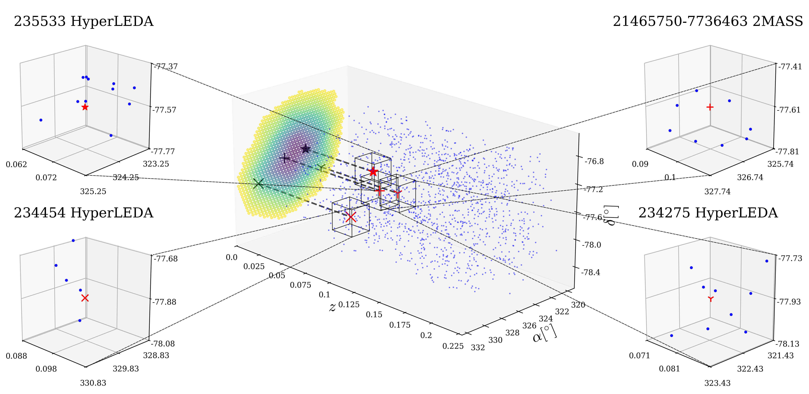
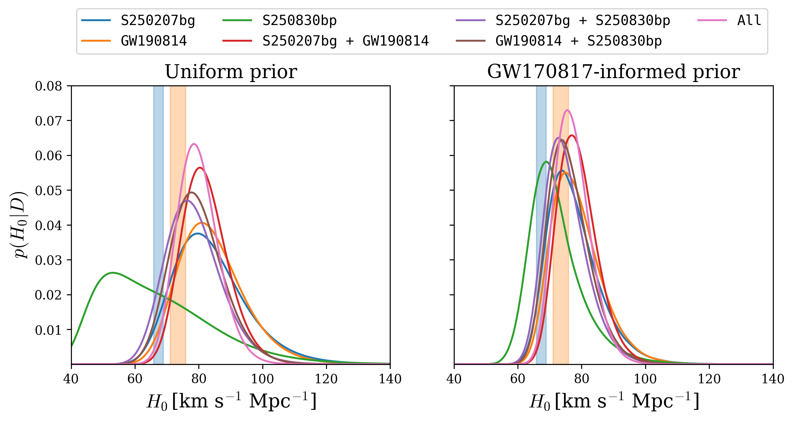

Research / 2026
Identifying the host of compact binary mergers
arXiv preprint, 2026.
In brief
Most gravitational-wave mergers have no observed electromagnetic counterpart to pinpoint their host galaxy. We use galaxy luminosity to narrow the candidate list inside well-localized events. Applying this approach to three events yields a small set of luminous candidates whose redshifts can be combined with gravitational-wave distances to infer the Hubble constant. These remain candidate associations: the estimated chance of random association is about 29–36%.
Selected figures
Click any plot to view it at full size.
Four candidate hosts for S250830bp

From candidate galaxies to cosmic expansion

Figures from the original paper (arXiv:2604.28132v2) by Salvarese, A., Chen, H.-Y., & Holz, D. E. Captions are short explanatory summaries.
← Back to all publications